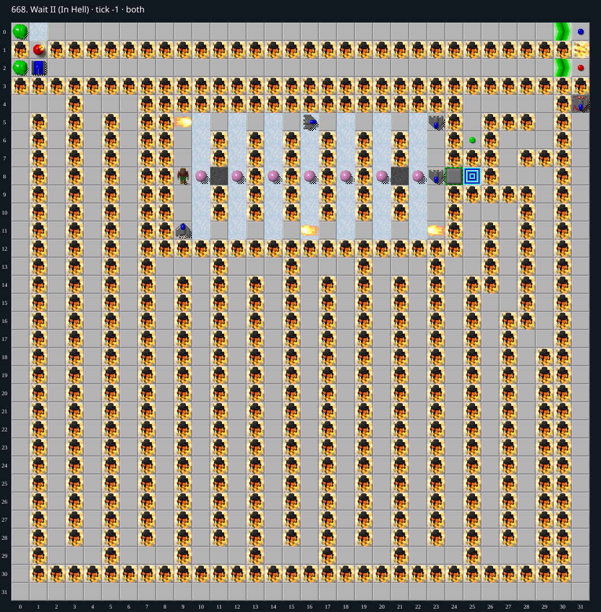

Jacques · Original Tile World MS
668. Wait II (In Hell)
Impossibility argumentThe maze containing the only green button has no mobile actor and an unconnected cloner.
0 chips required · No time limit
Why completion is impossible
- Chip (9, 8) and the central moving monsters are in a chamber enclosed by solid Burned_Chip tiles except closed toggle wall (24, 8). The only Exit (25, 8) is beyond that wall.
- The sole green button at (25, 6) lies in the outer maze. The outer maze is separated from the top corridors by a full row y 3 of Burned_Chip tiles and from the central chamber by the same solid tiles plus closed toggle (24, 8).
- The only creature originally in the outer maze is the glider on CloneMachine (31, 4). It is not in the loaded moving-creature list; no clone connections are supplied in this DAT level. The red button at (31, 2) therefore has no target and cannot release it.
- All other mobile creatures start either in the central chamber or above row 3. Neither group can cross these permanent barriers. There are no blocks or teleports.
- No actor can press the only green button, so the toggle remains closed, maintaining the separating invariant. Consequently Chip cannot reach the exit.
Inspect both layers
The main map shows the initial runtime state. Switch to the buried layer to inspect hidden terrain and items. Hover coordinates are also available in the downloadable SVG.


Recorded checks and attempts
- DAT two-layer inventory: Exact DAT metadata/layers decoded; initial production runtime loaded and rendered with repository sprites.
- initial runtime inventory: 17 mobile creatures, all in center or top corridors; cloner glider excluded; cloners=[]; blocks=[]
Scope and limitations
- Proof concerns ordinary legal play; cheats/editor changes excluded.
Evidence
- Structured report
- web/src/ruleset-ms/impl/builtinLevelRegistration.ts
- legacy_c/mslogic.c:1002-1011 (bounded cardinal movement)
- legacy_c/mslogic.c:1034-1042 (socket/key requirements)
- legacy_c/mslogic.c:1616-1736 (arrival/terrain effects)
- legacy_c/mslogic.c:1825-1832 (exit completion)
- web/src/ruleset-ms/impl/chipMovement.ts:104-108 (TypeScript completion)
- legacy_c/mslogic.c:442-451 (unconnected red button has no cloner target)
- legacy_c/mslogic.c:907-916 (dead/exited Chip tile movement laws are all zero)